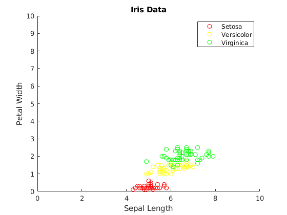
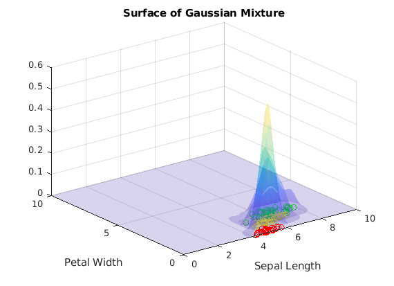
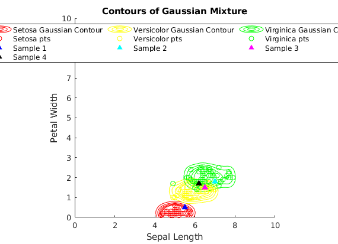

Contents
clear all; close all; clc;
Part A
opts = detectImportOptions('Iris_dataset.csv', 'NumHeaderLines', 1);
A = readtable('Iris_dataset.csv', 'NumHeaderLines', 1);
Part B
for var_ct = 1:length(table2array(A(1,1:end-1)))
B(:,var_ct) = eval(['A.Var' num2str(var_ct)]);
end
species = unique(eval(['A.Var' num2str(var_ct+1)]));
species_instances = eval(['A.Var' num2str(var_ct+1)]);
for instance = 1:length(species_instances)
onehot_spec = find(string(species_instances{instance}) == species);
B(instance,var_ct+1) = onehot_spec;
end
seto_inds = find(B(:,end) == find(strcmp(string(species), 'Iris-setosa')));
vers_inds = find(B(:,end) == find(strcmp(string(species), 'Iris-versicolor')));
virg_inds = find(B(:,end) == find(strcmp(string(species), 'Iris-virginica')));
plot_switch = 0;
xmin = 0;
xmax = 10;
ymin = 0;
ymax = 10;
figure();
scatter(B(seto_inds, 1), B(seto_inds, 4), 'red');
hold on;
scatter(B(vers_inds, 1), B(vers_inds, 4), 'yellow');
scatter(B(virg_inds, 1), B(virg_inds, 4), 'green');
title('Iris Data')
xlabel('Sepal Length')
ylabel('Petal Width')
axis([xmin xmax ymin ymax]);
legend({'Setosa','Versicolor','Virginica'})
hold off;
Gaussian Mixtures
sig1 = 0.2;
sig2 = sig1;
seto_total = length(seto_inds);
vers_total = length(vers_inds);
virg_total = length(virg_inds);
spec_total = length(B(:,end));
x1 = xmin: 0.1 :xmax;
x4 = ymin: 0.1 :ymax;
[X1, X4] = meshgrid(x1, x4);
Setosa
p_seto = seto_total/spec_total;
p_x1_giv_seto = p_x_giv_c(X1, B(seto_inds,1), sig1);
p_x4_giv_seto = p_x_giv_c(X4, B(seto_inds,4), sig2);
p_seto_giv_x = p_x1_giv_seto .* p_x4_giv_seto .* p_seto;
Versicolor
p_vers = vers_total/spec_total;
p_x1_giv_vers = p_x_giv_c(X1, B(vers_inds,1), sig1);
p_x4_giv_vers = p_x_giv_c(X4, B(vers_inds,4), sig2);
p_vers_giv_x = p_x1_giv_vers .* p_x4_giv_vers .* p_vers;
Virginica
p_virg = virg_total/spec_total;
p_x1_giv_virg = p_x_giv_c(X1, B(virg_inds,1), sig1);
p_x4_giv_virg = p_x_giv_c(X4, B(virg_inds,4), sig2);
p_virg_giv_x = p_x1_giv_virg .* p_x4_giv_virg .* p_virg;
Plotting
figure();
surf(X1,X4,p_seto_giv_x, 'EdgeAlpha', 0, 'FaceAlpha', .2); hold on;
surf(X1,X4,p_vers_giv_x, 'EdgeAlpha', 0, 'FaceAlpha', .2);
surf(X1,X4,p_virg_giv_x, 'EdgeAlpha', 0, 'FaceAlpha', .2);
scatter(B(seto_inds, 1), B(seto_inds, 4), 'red');
scatter(B(vers_inds, 1), B(vers_inds, 4), 'yellow');
scatter(B(virg_inds, 1), B(virg_inds, 4), 'green');
title('Surface of Gaussian Mixture')
xlabel('Sepal Length')
ylabel('Petal Width')
hold off;
figure();
hold on;
contour_levels = [0:0.03:0.15];
contour(X1, X4, p_seto_giv_x, contour_levels, 'red');
contour(X1, X4, p_vers_giv_x, contour_levels, 'yellow');
contour(X1, X4, p_virg_giv_x, contour_levels, 'green');
scatter(B(seto_inds, 1), B(seto_inds, 4), 'red');
scatter(B(vers_inds, 1), B(vers_inds, 4), 'yellow');
scatter(B(virg_inds, 1), B(virg_inds, 4), 'green');
title('Contours of Gaussian Mixture')
xlabel('Sepal Length')
ylabel('Petal Width')
axis square
Part C
new_data_x1 = [5.5; 7; 6.5; 6.2];
new_data_x4 = [0.5; 1.8; 1.5; 1.7];
new_data_probs = zeros([length(new_data_x1), length(species)]);
clrs=['b','c','m','k'];
for new_sample_num = 1:length(new_data_x1)
sample_x1 = new_data_x1(new_sample_num);
sample_x4 = new_data_x4(new_sample_num);
Setosa
p_x1_giv_seto_sample = p_x_giv_c(sample_x1, B(seto_inds,1), sig1);
p_x4_giv_seto_sample = p_x_giv_c(sample_x4, B(seto_inds,4), sig2);
Versicolor
p_x1_giv_vers_sample = p_x_giv_c(sample_x1, B(vers_inds,1), sig1);
p_x4_giv_vers_sample = p_x_giv_c(sample_x4, B(vers_inds,4), sig2);
Virginica
p_x1_giv_virg_sample = p_x_giv_c(sample_x1, B(virg_inds,1), sig1);
p_x4_giv_virg_sample = p_x_giv_c(sample_x4, B(virg_inds,4), sig2);
Combined
p_seto_giv_x_sample = p_x1_giv_seto_sample .* p_x4_giv_seto_sample .* p_seto;
p_vers_giv_x_sample = p_x1_giv_vers_sample .* p_x4_giv_vers_sample .* p_vers;
p_virg_giv_x_sample = p_x1_giv_virg_sample .* p_x4_giv_virg_sample .* p_virg;
new_data_probs(new_sample_num, :) = [p_seto_giv_x_sample, p_vers_giv_x_sample, p_virg_giv_x_sample];
pt_color = clrs(new_sample_num);
scatter(sample_x1, sample_x4, 50, pt_color, '^','filled')
end
legend({'Setosa Gaussian Contour','Versicolor Gaussian Contour',...
'Virginica Gaussian Contour','Setosa pts','Versicolor pts',...
'Virginica pts','Sample 1','Sample 2','Sample 3','Sample 4'},...
'location','best','NumColumns',3)
legend('Orientation','horizontal')
hold off;
[m, index] = max(new_data_probs, [], 2);
for sample_num = 1:length(new_data_probs(:,1))
formatSpec = 'With a probability of %0.3f, Sample %d is most likely %s';
prob_ans = m(sample_num);
class_ans = string(species{index(sample_num)});
str = sprintf(formatSpec, prob_ans, sample_num, class_ans);
disp(str)
end
Functions
function p = p_x_giv_c(att_mesh, att_vals, sigma)
k = 1/(sigma*sqrt(2*pi));
m = length(att_vals);
p = 0;
for instance = 1:length(att_vals)
p = p + exp((-1/(2*(sigma^2))).*(att_mesh - att_vals(instance)).^2);
end
p = p*k/m;
end
With a probability of 0.130, Sample 1 is most likely Iris-setosa
With a probability of 0.114, Sample 2 is most likely Iris-virginica
With a probability of 0.160, Sample 3 is most likely Iris-versicolor
With a probability of 0.159, Sample 4 is most likely Iris-virginica
  